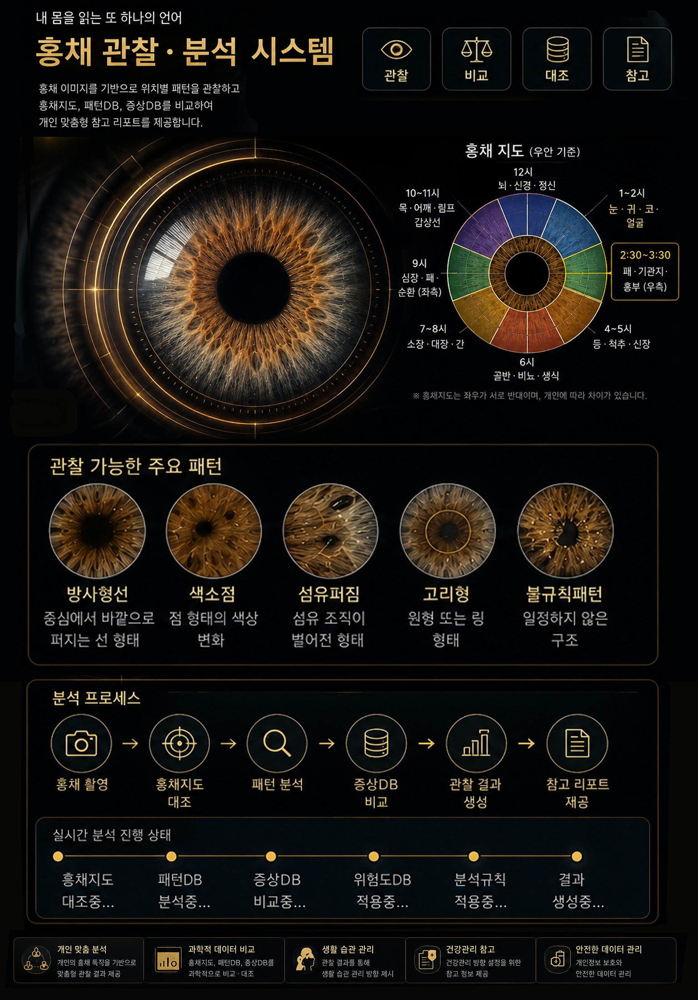

PERSONAL HEALTH CARE PLATFORM
내 몸을 읽고,
건강을 관리하는 새로운 방법
홍채촬영과 라이프진단을 함께 확인해
나에게 맞는 건강관리 방향을 정리합니다.
본 서비스는 의료 진단이 아닌 건강관리 참고 서비스입니다.

PERSONAL HEALTH CARE PLATFORM
홍채촬영과 라이프진단을 함께 확인해
나에게 맞는 건강관리 방향을 정리합니다.
본 서비스는 의료 진단이 아닌 건강관리 참고 서비스입니다.
